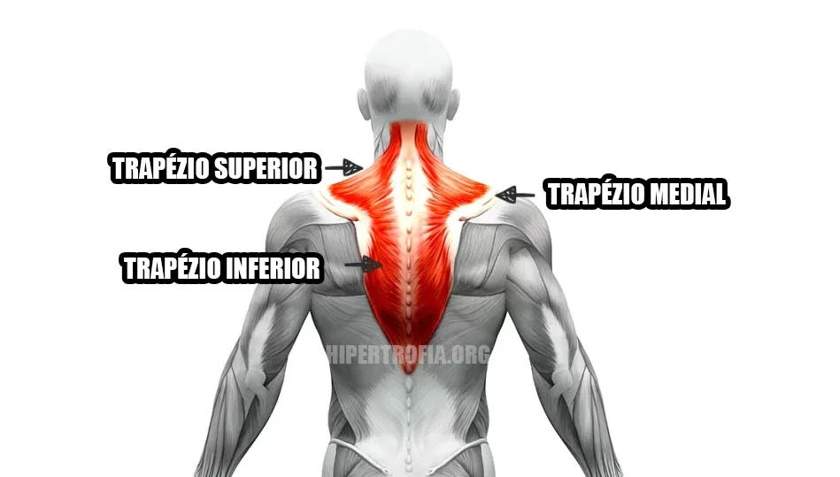
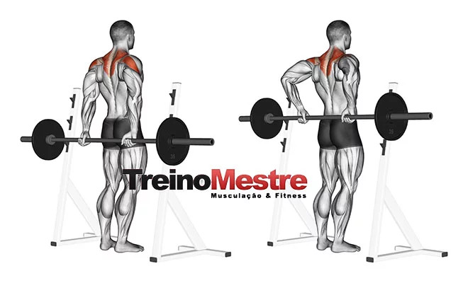

Ombro 24 séries

Este músculo é composto por deltóide anterior, deltóide lateral ou médio e deltóide posterior
DESENVOLVIMENTO COM BARRA NO BANCO (Militar)

4 séries (8 a 12)
Um dos melhores exercícios para deltóides (todos eles), também recrutando de forma significativa o tríceps e parte das costas.
ELEVAÇÃO LATERAL COM HALTERES

4 séries (8 a 12)
A elevação lateral com halteres trabalha diferentes tipos de músculos simultaneamente como: deltóide anterior, posterior e o medial, como também o trapézio e o músculo infraespinhal.
ELEVAÇÃO FRONTAL COM HALTERES PEGADA NEUTRA

4 séries (8 a 12)
Os principais músculos recrutados na elevação frontal com halteres são: deltoide anterior (frontal), deltoide medial (lateral), serrátil (estabilizador) e peitoral superior (estabilizador).
CRUSSIFIXO INVERTIDO NO VOADOR

4 séries (8 a 12)
Este exercício trabalha os deltóides, principalmente o feixe posterior. Deve ser observado que, no final do movimento, no momento da aproximação das escapulas, são solicitados o trapézio (porções média e inferior) e o rombóide.
ELEVAÇÃO LATERAL NO CABO

4 séries (8 a 12)
*Na elevação lateral no cabo (polia baixa) o músculo mais ativado é a porção lateral do deltoide, fazendo um movimento de abdução do ombro
ALAVANCA LATERAL NO CABO
4 séries (8 a 12)
*Na
Tapézio 3 séries
Trapézio é o segundo maior músculo da parte superior das costas, depois do dorsal. Ele ocupa quase um terço da parte superior das costas, da base do pescoço até o meio da coluna, e da borda externa de uma omoplata até a borda externa da outra, formando um formato de pipa.
A função das fibras superiores do trapézio é puxar as omoplatas e clavículas para cima em direção às orelhas. As fibras médias puxam as omoplatas para trás em direção à coluna, enquanto as fibras inferiores as puxam para baixo e para dentro. Você precisa fazer exercícios que repliquem cada um desses movimentos para trabalhar todas as áreas do músculo.
ENCOLHIMENTO COM HALTERS

3 séries (12)
Para fazer o encolhimento com halteres, pegue um halter em cada mão e fique em pé com os pés afastados na largura dos ombros. Suas palmas devem estar voltadas para os lados das coxas (pegada neutra).
ENCOLHIMENTO COM BARRA POR TRÁS DO CORPO
3 séries (12)
O encolhimento com barra por trás do corpo muda o angulo no qual o seu trapézio está trabalhando (Cupim de boi*).